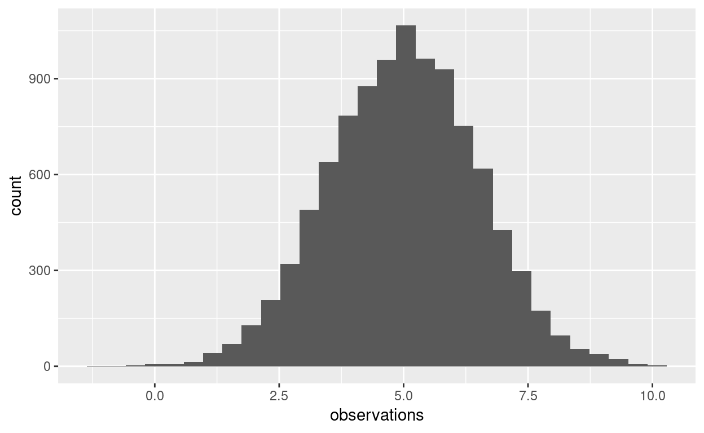
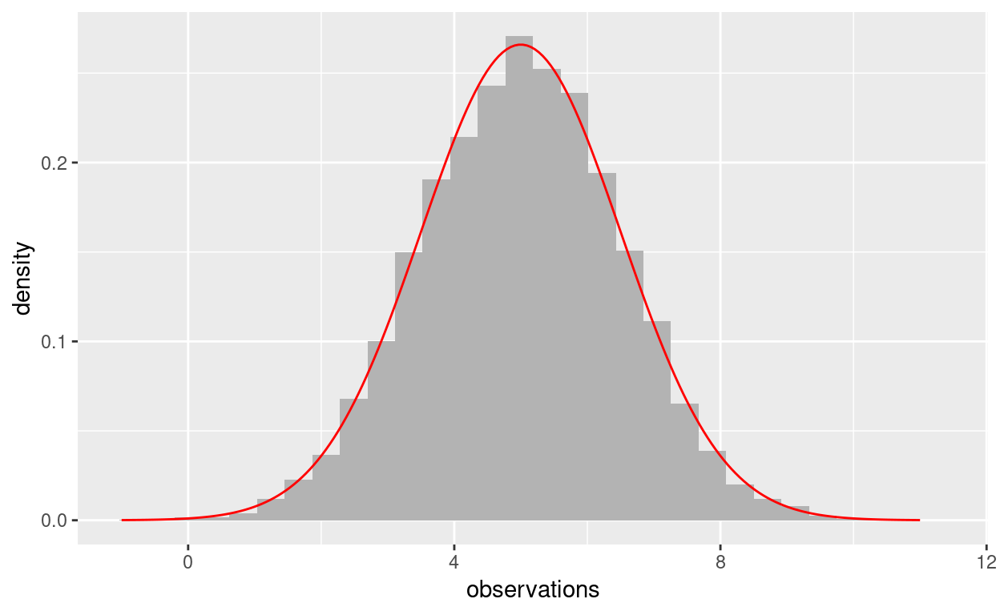
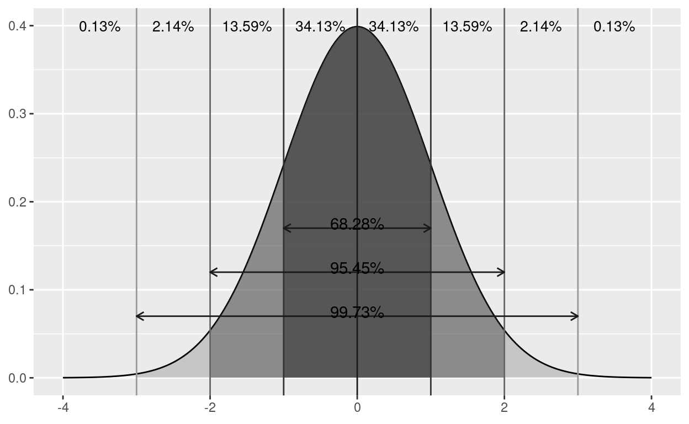
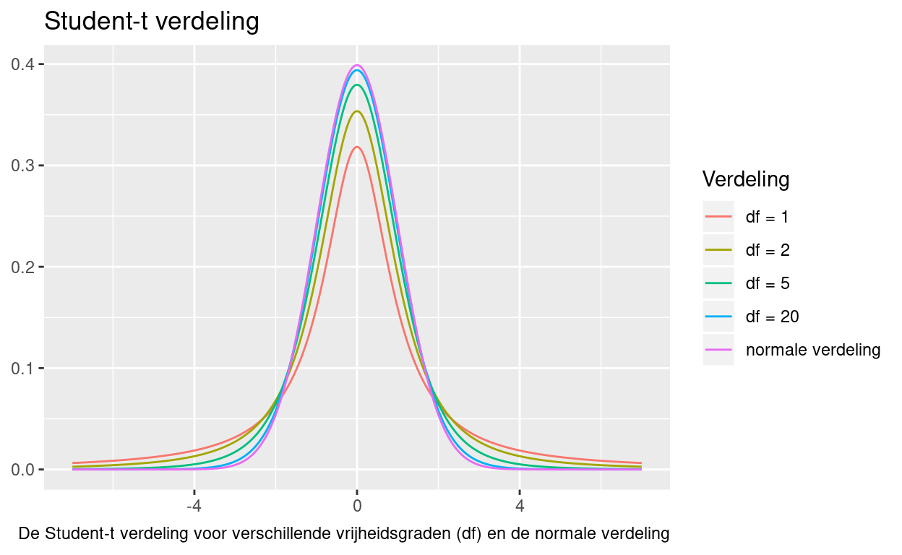

Leerdoelen
Na deze tutorial:
- Kan je een Gauss-curve voor een normale verdeling of de Student-t verdeling plotten
- Een histogram met kansdichtheidscurve voor een steekproef plotten
- De R-functies gerelateerd aan de normale verdeling (
dnorm(),pnorm(),qnorm(),rnorm()) en de Student-t verdeling (dt(),pt(),qt(),rt()) toepassen - Kansrekenen met de normaalverdeling (linker- en rechterstaartkans of combinaties)
Een normale verdeling visualiseren
Om het plotten van een Gausscurve voor een normale verdeling te vergemakkelijken, definiëren we hier een functie gauss_plot:
gauss_plot <- function(mean = 0, sd = 1, num_points = 200) {
# Create a vector of "interesting" x-values, i.e. the region where
# the density function is above 0
x <- seq(from = mean - 4 * sd,
to = mean + 4 * sd,
length.out = num_points)
# Calculate the probability density for the specified normal distribution
y <- dnorm(x, mean, sd)
# Plot the function
ggplot() +
geom_line(aes(x = x, y = y))
}Voor een gegeven gemiddelde (mean) en standaardafwijking (stdev) zal de functie een Gausscurve tekenen voor die normale verdeling. De R-functie dnorm(x, mean, sd) geeft de hoogte van de Gausscurve op punt x voor een normaal verdeelde variabele met gemiddelde mean en standaardafwijking sd.
Als je geen argumenten opgeeft, zal de standaardnormale verdeling getekend worden. Het gemiddelde ligt altijd in het midden en naar de randen van de grafiek toe is de kansdichtheid zeer dicht bij 0.
Probeer dit zelf uit. Geef verschillende waarden voor het gemiddelde en standaardafwijking op en probeer het geval van de standaardnormaalverdeling (geen argumenten meegeven).
gauss_plot(mean = 100, sd = 5)Wat je zou moeten opvallen is dat de schaal op de x- en y-assen telkens veranderen, maar dat de vorm van de curve altijd dezelfde is.
De kansdichtheidsfunctie voor de normaalverdeling heeft enkele interessante eigenschappen:
- de totale oppervlakte tussen de x-as en de curve is 1
- de curve is symmetrisch met het gemiddelde als middelpunt
Histogram en kansdichtheidscurve van een steekproef
Wanneer je de waarden van een variabele uit een steekproef hebt, dan kan je er van uit gaan dat deze niet trouw de Gauss-curve zal volgen. Soms is het nuttig dit te visualiseren om te zien hoe groot de afwijkingen zijn. Je kan een dichtheidsplot maken (geom_density()) of, zoals we hier zullen doen, een histogram plotten met de theoretische kansdichtheid (op basis van steekproefgemiddelde en -standaardafwijking).
Laten we eerst de steekproef definiëren door een aantal willekeurige getallen te genereren die normaal verdeeld zijn:
n <- 10000
m <- 5
s <- 1.5
observations <- rnorm(n = n, mean = m, sd = s)De functie rnorm(n, mean, sd) genereert n willekeurige getallen die normaal verdeeld zijn met gemiddelde m en standaardafwijking s.
Een histogram tekenen we zo:
ggplot() +
geom_histogram(aes(observations), bins = 30)
Om de dichtheidsfunctie te kunnen plotten, berekenen we de punten van de theoretische distributie:
dx <- seq(from = m - 4 * s, to = m + 4 * s, length.out = 200)
dy <- dnorm(dx, m, s)De plot wordt dan:
ggplot() +
geom_histogram(aes(observations, stat(density)), bins = 30, fill = "grey70") +
geom_line(aes(x = dx, y = dy), color = "red")
Merk op dat we stat(density) gebruiken om de relatieve frequenties te tonen i.p.v. de absolute. De theoretische kansdichtheidsfunctie bevat waarden tussen 0 en 1 en die zou niet zichtbaar zijn op het histogram met de absolute frequenties.
Om alles aan elkaar te hangen, definiëren we hier een functie die voor een gegeven steekproef een histogram met theoretische kansdichtheidsfunctie tekent:
density_hist <- function(x) {
n <- length(x) # sample size
m <- mean(x, na.rm = TRUE) # sample mean
s <- sd(x, na.rm = TRUE) # sample standard deviation
# theoretical density function
dx <- seq(from = m - 4 * s, to = m + 4 * s, length.out = 200)
dy <- dnorm(dx, m, s)
# plot
ggplot() +
geom_histogram(aes(x, stat(density)), bins = 30, fill = "grey70") +
geom_line(aes(x = dx, y = dy), color = "red")
}Oefening 1
Speel zelf met de functie, en probeer bijvoorbeeld de steekproef veel kleiner te maken. Kleinere steekproeven geven typisch grotere afwijkingen van de theoretische dichtheidsfunctie.
density_hist(rnorm(n = 10000, mean = 5, sd = 1.5))Oefening 2
Stel dat we willen onderzoeken of de lengte van Starwars-karakters normaal verdeeld is. Gebruik de density_hist() function om hier een plot van te maken.
density_hist()En? Is de variabele normaal verdeeld, denk je?
Kansverdeling in de normale verdeling
Een interessante eigenschap van de normale verdeling is dat ze toelaat om aan kansberekening te doen. Als je weet dat een bepaalde stochastische variabele \(X\) normaal verdeeld is met een zeker gemiddelde \(\mu\) en standaardafwijking \(\sigma\) (notatie: \(X \sim N(\mu, \sigma)\)), dan mag je ook verwachten dat de observaties in een steekproef op een systematische manier verspreid liggen. Onderstaande afbeelding illustreert dit:

In de afbeelding zie je de standaardnormaalverdeling, maar de manier waarop de observaties zullen verspreid liggen geldt voor elke normale verdeling:
- in het interval \([\mu- \sigma, \mu+ \sigma]\) ligt ongeveer 68.28% van de data;
- in het interval \([\mu-2\sigma, \mu+2\sigma]\) ligt ongeveer 95.45% van de data;
- in het interval \([\mu-3\sigma, \mu+3\sigma]\) ligt ongeveer 99.28% van de data.
Dan kan je ook vragen gaan beantwoorden als “wat is de kans dat ik uit een normaal verdeelde populatie een getal selecteer dat kleiner is dan \(x\)?”. We noteren deze kans \(P(X < x)\) en noemen dit de linkerstaartkans. Grafisch:

De linkerstaartkans voor \(x\) is het gekleurde gebied onder de Gauss-curve. Deze waarde is zo vaak nodig dat er een functie voor voorzien is: pnorm().
TODO: voorbeelden en oefeningen
De Student-t verdeling visualiseren

Samenvatting
Functies voor kansberekening bij de normaalverdeling met gemiddelde m en standaardafwijking s.
| Functie | Betekenis |
|---|---|
pnorm(x, m, s) |
Linkerstaartkans \(P(X<x)\) |
dnorm(x, m, s) |
Hoogte van de Gausscurve op punt x |
qnorm(p, m, s) |
Onder welke grens zal p% van de waarnemingen liggen? |
rnorm(n, m, s) |
Genereer \(n\) willekeurige normaal verdeelde getallen |
Functies voor kansberekening bij de Student-t verdeling met df vrijheidsgraden.
| Functie | Betekenis |
|---|---|
pt(x, df) |
Linkerstaartkans \(P(X<x)\) |
dt(x, df) |
Hoogte van de dichtheidsfunctie op punt x |
qt(p, df) |
Onder welke grens zal p% van de waarnemingen liggen? |
rt(n, df) |
Genereer \(n\) willekeurige getallen volgens de gegeven verdeling |